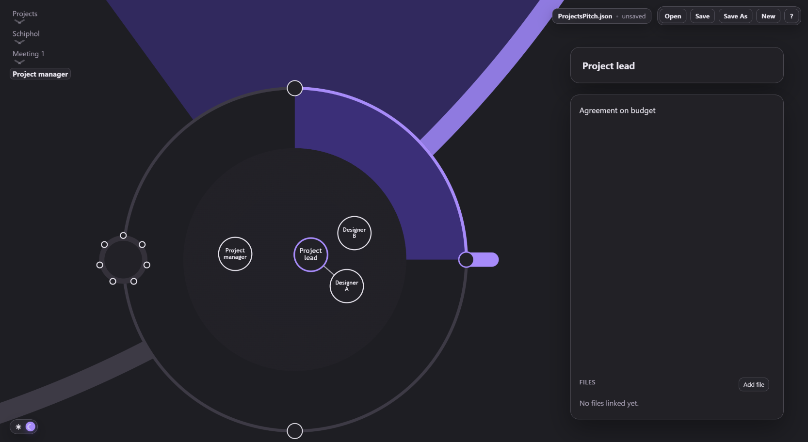
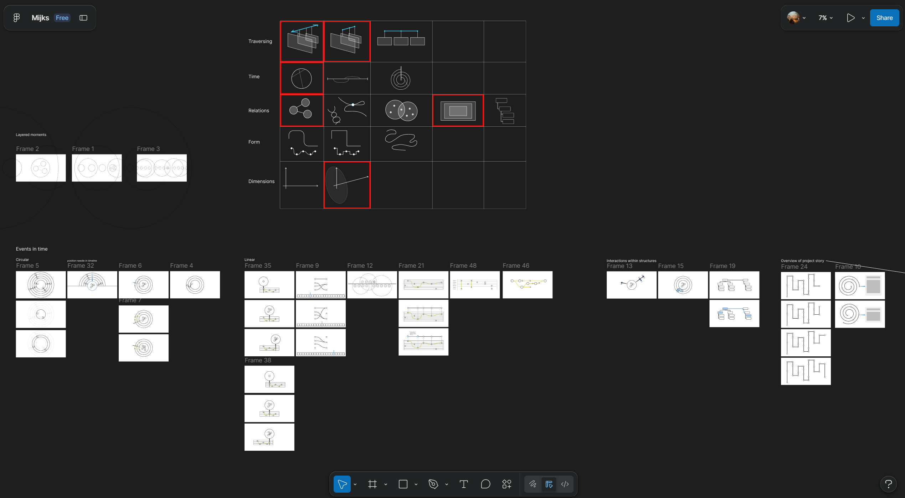
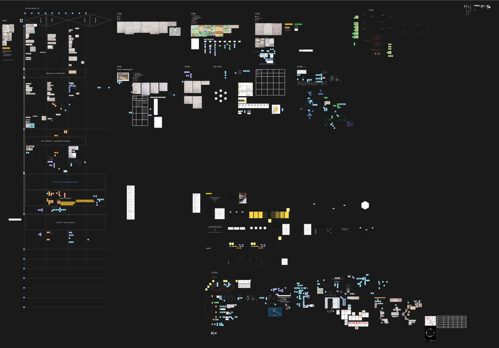

Mijksenaar workflow tool
Open MijksMijks is an interactive tool for tracing how ideas, decisions, files, and contributions develop throughout complex creative work. Instead of turning every meeting, conversation, or update into an isolated note, it places them on a circular timeline that keeps the wider process visible.
Moments can be linked to the topics they change, expanded into deeper nested timelines, and supported with notes and files. This makes it possible to explore a detailed discussion without losing its context in the larger project.
The result is a visual way to read an iterative process: a tool for mapping the relationships between ideas as they grow, branch, and reconnect over time.
Role
Concept Design, UX/UI Design, Front-end Development
-

Try it yourself
Try it yourself 
